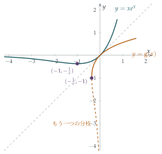

STEP II 2021、第4問
先に進む前に問題を読んでおこう。問題は、OCRが配布している2021年のSTEP問題一式（zipファイル）のSTEP IIに収録されている： www.ocr.org.uk/Images/696588-2021-past-papers.zip
導入
\(e^{-x} = 5x\) を解くことができるだろうか。電卓に入っているどの関数を使っても解けない。式変形をしても埒が明かない。\(x\) が指数関数（exponential function）の中と外の両方に現れていて、どうしても分離できないのである。試行錯誤を重ねれば数値的な答えは得られるが、「公式」は存在しない。
本当にそうだろうか。この問題は大胆な一歩を踏み出す。ある種の方程式が既知の関数では解けないならば、それを解く新しい関数を発明すればよいというのである。これはまさに、数学者たちが \(\sqrt{x}\)（\(x^2\) の逆関数）、\(\ln x\)（\(e^x\) の逆関数）、\(\arcsin x\) について行ってきたことである。ここで登場する新しい関数は \(xe^x\) の逆関数（inverse function）であり、現在ではランベルトの W 関数（Lambert W function）と呼ばれている。この関数を手にすれば、\(x^x = 10\) から物理法則に至るまで、驚くほど多様な方程式を厳密に解くことができる。
取りかかる前に
方程式を「解く」とは、実際にはどういう意味だろうか。\(x = \sqrt{2}\) は \(x^2 = 2\) の解なのだろうか、それとも単に解に付けた名前にすぎないのだろうか。
その両方である。\(\sqrt2\) は「平方すると \(2\) になる正の数」に付けた名前である。これを答えとして認めるのは、関数 \(\sqrt{\phantom{x}}\) がよく理解されており、計算が容易で、その性質が知られているからである。ある答えが「公式」とみなされるかどうかは、どの関数に名前を付けることに合意しているかによって決まる。この問題は、そのリストに関数をもう一つ加えるのである。
順を追って解く
段階 1 曲線 \(y = xe^x\)
\(\frac{\mathrm{d}y}{\mathrm{d}x} = e^x + xe^x = (1 + x)e^x\) であり、これが \(0\) になるのは \(x = -1\) のときだけで、そのとき \(y = -e^{-1}\) である。導関数（derivative）は \(x < -1\) で負、\(x > -1\) で正であるから、これは最小値（minimum）である。
\(x \to +\infty\) のとき、また \(x \to -\infty\) のとき、\(xe^x\) はどうなるだろうか。曲線は座標軸とどこで交わるだろうか。
\(x \to \infty\) のとき \(xe^x \to \infty\) である。\(x \to -\infty\) のとき、指数関数的な減衰が一次関数的な増大に勝つので、\(xe^x \to 0\) であり、下側から近づく。曲線は原点を通る。したがって曲線は、負の \(x\) 軸のすぐ下から現れ、最小点 \((-1, -\frac1e)\) まで下がり、その後 \((0, 0)\) を通って上昇し、急激に上へ伸びていく（図 3.9.1）。
段階 2 逆関数
逆関数をもつためには \(\mathrm{f}\) は単射（one-to-one）でなければならないので、狭義単調増加（strictly increasing）または狭義単調減少（strictly decreasing）である範囲に制限しなければならない。右側の部分を含むそのような最大の区間は \([-1, \infty)\) であるから、\(a = -1\) である。\([-1, \infty)\) において \(\mathrm{f}\) は \(-\frac1e\) から \(\infty\) まで増加するので、逆関数 \(\mathrm{g}\) は \([-\frac1e, \infty)\) 上で定義され、\(\mathrm{g}(-\frac1e) = -1\) から増加し、\(\mathrm{g}(0) = 0\) を通り、ゆっくりと増大する（\(x\) が大きいところでは \(\ln x\) よりもさらにゆっくりである）。そのグラフは \(y = xe^x\) の右側の部分を直線 \(y = x\) に関して対称移動したものであり、\((-\frac1e, -1)\) において鉛直な接線（vertical tangent）をもつ。
\(\mathrm{g}\) を特徴づける性質は \[\mathrm{g}(z)\,e^{\mathrm{g}(z)} = z, \qquad \mathrm{g}(z) \geq -1.\] である。したがって (iii) のどの小問でも方針は同じである。方程式を \((\text{何か})\,e^{(\text{同じ何か})} = (\text{ある数})\) の形に変形すればよい。

段階 3 四つの方程式
(a) \(e^{-x} = 5x\)。両辺に \(e^x\) を掛けて \(5\) で割ると \(xe^x = \frac15\) となる。よって \(x = \mathrm{g}\bigl(\frac15\bigr) \approx 0.169\) である。\(xe^x\) は \(x < 0\) で負であるから解はすべて正であり、\(xe^x\) は \(x > 0\) で増加するので、これが唯一の解である。
(b) と (c) では、未知数は \(x\ln x\) の形で現れる。どのような置換（substitution）をすれば \(x\ln x\) を \(ue^u\) の形に変えられるだろうか。
\(x = e^u\) とおくと、\(\ln x = u\) であり、\(x\ln x = ue^u\) となる。
(b) \(2x\ln x + 1 = 0\) は \(ue^u = -\frac12\) となる。しかし、すべての実数 \(u\) に対して \(ue^u \geq -\frac1e \approx -0.368\) であり、\(-\frac12 < -\frac1e\) である。したがって実数解は存在しない。
(c) \(3x\ln x + 1 = 0\) は \(ue^u = -\frac13\) となり、\(-\frac1e < -\frac13 < 0\) である。高さ \(-\frac13\) の水平な直線は、\(u = -1\) における最小点の両側で一回ずつ、すなわち二回 \(y = ue^u\) と交わる。右側の解は \(u = \mathrm{g}\bigl(-\frac13\bigr)\) であり、 \[x = e^{\mathrm{g}(-1/3)} \approx 0.538.\] を得る。もう一方の解は \(u < -1 < \mathrm{g}\bigl(-\frac13\bigr)\) を満たし、\(x = e^u\) は \(u\) について増加するので、求めた解は二つのうち大きいほうである（もう一方はおよそ \(0.220\) である）。
では (d) の \(x = 3\ln x\) に挑戦してみよう（ヒント：両辺を指数の肩に乗せ、「何か」が \(x\) の定数倍であるような \((\text{何か})\,e^{\text{何か}}\) の形を目指す）。
(d) \(x = 3\ln x\) は \(e^{x/3} = x\) を意味するので \(xe^{-x/3} = 1\) であり、両辺に \(-\frac13\) を掛けると \[\left(-\frac x3\right)e^{-x/3} = -\frac13.\] となる。したがって \(-\frac x3\) は、(c) で求めた \(ue^u = -\frac13\) の二つの解のどちらかである。\(\mathrm{g}\) によって与えられるほうをとると、\(x = -3\,\mathrm{g}\bigl(-\frac13\bigr) \approx 1.857\) である。もう一方の解は、もう一つの解 \(u < \mathrm{g}(-\frac13)\) から得られ、より大きな \(x = -3u\) を与える。したがって今度は、求めた解は二つのうち小さいほうである（もう一方はおよそ \(4.536\) である）。■
段階 4 \(x^x = 10\)
対数をとると \(x\ln x = \ln 10\) となる。\(x = e^u\) とおくとこれは \(ue^u = \ln 10\) となるので、\(u = \mathrm{g}(\ln 10)\) であり、 \[x = e^{\mathrm{g}(\ln 10)} \approx 2.506.\] である。\(\mathrm{g}(z)e^{\mathrm{g}(z)} = z\) であるから、これを \(x = \dfrac{\ln 10}{\mathrm{g}(\ln 10)}\) と書くこともできる。■
振り返り
足りない関数に名前を付ける。方程式が既知の関数で解けないとき、新しい関数を逆関数として定義するのは正当な手段であり、しばしば見通しをよくしてくれる。
標準形に変形する。(iii) と (iv) のすべての小問は、\(x = e^u\) や \(u = -\frac x3\) といった置換を用いることで、\(ue^u = \text{定数}\) に帰着した。
グラフで解の個数を数える。\(ue^u = c\) の解が 0 個、1 個、2 個のいずれであるかは、\(c\) が最小値 \(-\frac1e\) に対してどこにあるかだけで決まる。
背後にある数学
ヨハン・ハインリッヒ・ランベルト（Johann Heinrich Lambert）は 1758 年にこの種の方程式を研究し、オイラー（Euler）は 1783 年にそれをさらに発展させた。しかしこの関数には、1990 年代になるまで標準的な名前がなかった。名前が必要になったのは、数式処理システム（computer algebra system）Maple の開発者たちである。1996 年、Robert Corless、Gaston Gonnet、David Hare、David Jeffrey、そしてドナルド・クヌース（Donald Knuth）は、論文「On the Lambert W function」を発表し、この関数の性質と応用をまとめた。この論文は数千回引用され、W は現在ではほとんどの数学ソフトウェアに組み込まれている。問題中の関数 \(\mathrm{g}\) は主枝（principal branch）\(W_0\) である。図 3.9.1 の破線の曲線は (c) と (d) の二つ目の解を与えたものであり、もう一つの実数の分枝 \(W_{-1}\) である。
W が現れるところ
ウィーンの変位則（Wien’s displacement law）。高温の物体が最も強く放射する波長は、その温度に反比例する。その比例定数は \(5(1 - e^{-x}) = x\) を解くことで得られ、その正の解は \(x = 5 + W\bigl(-5e^{-5}\bigr) \approx 4.965\) である。約 \(5800\) K の太陽が黄白色に見え、より低温の赤色矮星が赤く見えるのはこのためである。
冪の塔（power tower）。無限の冪の塔 \(x^{x^{x^{\cdot^{\cdot^{\cdot}}}}}\) は \(e^{-e} \leq x \leq e^{1/e}\) のとき収束（converge）し、その値は \(\dfrac{W(-\ln x)}{-\ln x}\) である。
人口モデルと感染症モデル。最も単純なモデルにおける感染症の最終規模や、いくつかの成長モデルにおいて人口が所定の値に達するまでの時間は、いずれも W によって与えられる。
初等関数
\(W\) は本当に新しい関数なのだろうか。それとも \(\exp\)、\(\ln\)、累乗根、三角関数を用いて書き表せるのだろうか。答えは、本当に新しい関数である。1830 年代のリウヴィル（Joseph Liouville）にさかのぼる定理により、\(W\) は初等関数（elementary function）ではないことが示される。同じ理論により、\(\int e^{-x^2}\,\mathrm{d}x\) のような一見何でもない積分も初等関数の範囲では計算できないことがわかる。正規分布（normal distribution）が独自の特殊関数を必要とするのはこのためである。
思考のスキル
方程式 \(\mathrm{f}(x) = c\) は、\(\mathrm{f}\) を単射になるように制限しさえすれば、\(x = \mathrm{f}^{-1}(c)\) によって解ける。どの解が得られるかは、その制限の仕方によって決まる。
見た目の異なる多くの方程式が、実は同じ方程式の姿を変えたものである。共通の形を明らかにする置換を見つけることが、鍵となる一歩である。
次の一歩
2 と 4、そしてもう一つ。方程式 \(x^2 = 2^x\) には明らかな解 \(x = 2\) と \(x = 4\) がある（第 3.5 節 と比較せよ）。この方程式には負の解もあり、それが \[x = -\frac{2}{\ln 2}\,\mathrm{g}\!\left(\frac{\ln 2}{2}\right) \approx -0.767.\] であることを示せ。
導関数。\(\mathrm{g}(x)e^{\mathrm{g}(x)} = x\) を陰関数微分（implicit differentiation）することにより、\(x \neq 0\) のとき \[\mathrm{g}'(x) = \frac{\mathrm{g}(x)}{x\bigl(1 + \mathrm{g}(x)\bigr)}.\] であることを示せ。\(x = -\frac1e\) では何が起こるだろうか。
積分。置換 \(x = we^w\) を用いて、\(\displaystyle\int_0^e \mathrm{g}(x)\,\mathrm{d}x = e - 1\) を示せ。
冪の塔。冪の塔 \(T = \sqrt2^{\sqrt2^{\sqrt2^{\cdots}}}\) が収束すると仮定して、\(T = \sqrt2^{\,T}\) を示し、\(T = 2\) または \(T = 4\) であることを導け。どちらが正しいだろうか（数列 \(t_1 = \sqrt2\), \(t_{n+1} = \sqrt2^{\,t_n}\) の最初のいくつかの項を計算し、第 2.2 節 のくもの巣図（cobweb diagram）について考えてみよ）。
さらに学ぶために
Robert Corless et al., “On the Lambert W function”, Advances in Computational Mathematics 5 (1996)。この関数に名前を与えた論文である。この節を学んだ後であれば、最初のいくつかの節は読むことができる。
Brian Hayes, “Why W?”, American Scientist 93 (2005)。この関数の歴史と用途についての生き生きとしたエッセイ。オンラインで無料で読める。
Brian Conrad, “Impossibility theorems for elementary integration”。リウヴィルの理論を解説した講義ノートで、オンラインで入手できる。上級者向け。